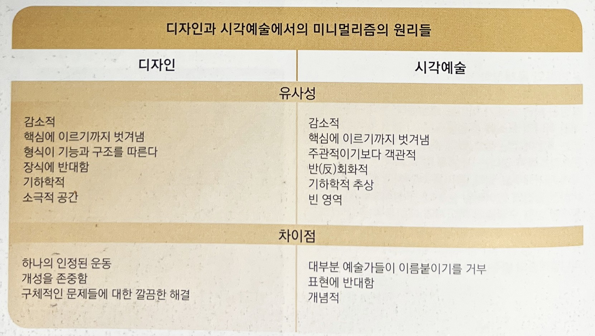
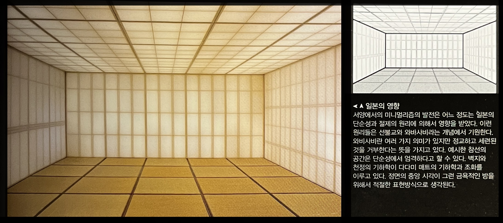
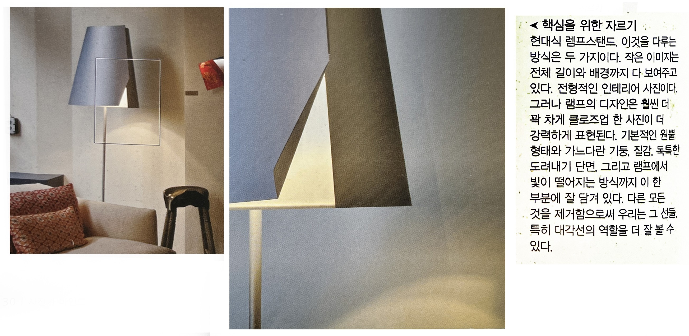

유명한 건축가 미스 반 데어 로에는 "더 적은 것이 더 좋은것"(Less is more)이라고 말했다. 한편 제품 디자이너인 디터 람스는 "더 적지만 더 좋은 것"이라고 말했고 구조공학자인 버크민스터 풀러는 "적은 것을 가지고 더 많이 하라"고 말했다. 이런 말들은 도전 받는 일이 거의 없다. 그런 말들은 모더니즘을 핵심을 꿰뚫었으며, 수단과 구조와 통일성의 효율적인 사용과 같은 구성의 기본을 정확하게 잡아 냈기 때문이다. 무엇보다도 미니멀리즘은 감소시키는 것이다. 그것은 껍질을 벗겨내고 핵심적인 것까지 파고 드는 것을 뜻한다. "형식은 기능을 따른다" 또는 "형식은 구조적 필요를 따른다"는 모더니즘의 원리를 것이기도 하다. 이런 논리는 수식이나 번잡한 장식의 거부로 이어진다. 오히려 깔끔하고 단순한 기하학을 선호한다.
 ➪ 일본의 영향
➪ 핵심을 위한 자르기
[참고문헌]
[1] 사진가 마인드, ‘마이클 프리맨’지음, 김문호 옮김, 비즈앤비즈, 2011.10.25.
[2] 원하는 사진을 어떻게 찍는가, 김성민, 소울메이트, 2015. 2. 9.
....
....
....
....
....